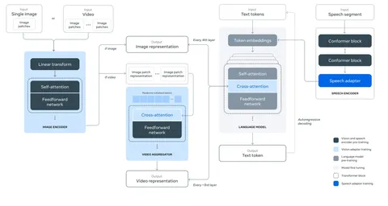
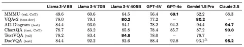

Сегодня расскажем, как LLaMA 3.1 работает с изображениями. Как устроена архитектура модели, на чём её обучали и какие результаты она показывает на разных бенчмарках.
В основе энкодера изображений в Llama 3 выступает модель ViT-H/14 с 630 миллионами параметров, обученная на наборе из 2,5 миллиарда пар изображений и текстов. Картинку, полученную на вход, делят на патчи размером 16X16, прогоняют через линейное преобразование и трансформерные слои.
На выходе получается картиночное представление из 2 308 токенов, что весьма много. Эта последовательность с помощью кросс-аттеншен блоков подается в LLM. Это интересно, потому что, как правило, в мультимодальных LLM (visual language models, VLM) картиночные токены подают прямо в промпт, добавляя к текстовым. Это сделано для того, чтобы заморозить веса LLM и обучать только голубые блоки на схеме.
Тем самым не забивается исходный контекст LLM, а свойства модели на текстовом домене не теряются. Веса языковой модели остаются замороженными, чтобы сохранить производительность на текстовых задачах, то есть обновляются только веса визуального энкодера и адаптера изображений.
Что касается видео, то тут меняется количество кадров на входе: на претрейне их 16, а на файнтюне — 64. Далее их сводят к фиксированной размерности и точно так же, как с изображениями, добавляют через кросс-аттеншн в LLM.
На претрейне используют 6 миллиардов пар картинка-текст. Для фильтрации датасета убирают все описания на языках, отличных от английского, и пары с низким CLIP-скором. Дальше происходит дедупликация, чтобы исключить часто повторяющиеся картинки.
В ходе ресемплирования текстовых описаний их частотность понижают. Кроме того, в каждое описание добавляют распознанный на картинке текст — это нужно для улучшения результатов на задачах, которые требуют использования OCR.
Существует весьма необычная стадия пост-претрейна — с применением небольшого датасета на 500 миллионов сэмплов. 150 миллионов из них — это изображения вроде скриншотов с HTML-кодами и таблицами.
На файнтюне инженеры прибегают к ещё одному нестандартному трюку — hot-swap. Они подменяют веса предварительно обученной LLM на веса языковой модели, прошедшей Instruction Tuning. На SFT используют академические датасеты, ответы, написанные людьми, и синтетические данные — например, изображения, созданные из текстовых описаний.
Далее создают пары, оцененные асессорами по семибалльной шкале. Кроме того, есть процедура Rejection sampling для итеративного выбора высококачественных ответов, сгенерированных моделью. Потом авторы статьи обучают reward-модель и делают DPO, как и для текстовой модели.
Получившаяся модель на 405 миллиардов параметров показывает 80,2 пункта в бенчмарке VQAv2 и 84,8 пункта в TextVQA. При этом она уступает Claude 3.5 в DocVQA, ChartQA и AI2 Diagram.
Разбор подготовил
CV Time
